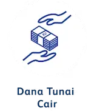

Subsection
FAST PROCESS, RIGHT INSTALLMENT!
PROSES PENGAJUAN

PERSYARATAN UMUM

- Pembayaran cicilan yang melewati tanggal jatuh tempo akan diberlakukan denda (Ta’zir) per hari, sebesar Rp500 untuk setiap kelipatan Rp100.000.
- Debitur sepakat dan setuju pengambilan BPKB oleh pihak lain (bukan Debitur sendiri) akan dikenakan biaya Rp150.000.
- Debitur sepakat dan setuju dikenakan biaya penitipan BPKB sebesar Rp2.500 per hari jika BPKB yang sudah dihibahkan belum diambil dalam jangka waktu 30 hari kalender setelah tanggal pelunasan.
- Apabila Konsumen ingkar janji (wanprestasi), maka akan dikenakan biaya ganti rugi (Ta’widh) yang besarnya sesuai dengan kerugian finansial (real cost) BAF, termasuk tetapi tidak terbatas pada biaya transportasi, akomodasi, telekomunikasi, dan biaya penyerahan kembali atas barang yang disewakan sebesar Rp750.000.
- Pembayaran cicilan yang melewati tanggal jatuh tempo akan diberlakukan denda (Ta’zir) per hari, sebesar Rp250 untuk setiap kelipatan Rp100.000.
- Debitur sepakat dan setuju pengambilan BPKB oleh pihak lain (bukan Debitur sendiri) akan dikenakan biaya Rp300.000.
- Debitur sepakat dan setuju dikenakan biaya penitipan BPKB sebesar Rp2.500 per hari jika BPKB yang sudah dihibahkan belum diambil dalam jangka waktu 30 hari kalender setelah tanggal pelunasan.
- Apabila Konsumen ingkar janji (wanprestasi), maka akan dikenakan biaya ganti rugi (Ta’widh) yang besarnya sesuai dengan kerugian finansial (real cost) BAF, termasuk tetapi tidak terbatas pada biaya transportasi, akomodasi, telekomunikasi, dan biaya penyerahan kembali atas barang yang disewakan sebesar Rp5.000.000.
- Debitur wajib mengasuransikan barang yang dibiayai BAF, dimana penggantian digunakan untuk melunasi kewajiban debitur terhadap BAF. Jika ada kelebihan klaim, maka BAF wajib mengembalikan ke Debitur, dan jika terdapat kekurangan, maka dihitung sebagai utang pembiayaan Debitur yang harus dilunasi.
- Asuransi yang tercover meliputi:
- Asuransi Unit kendaraan: TLO
- Asuransi PA (Personal Accident)
- Asuransi HCP (Hospitalized Cash Plan)
- Debitur wajib mengasuransikan barang yang dibiayai BAF, dimana penggantian digunakan untuk melunasi kewajiban debitur terhadap BAF. Jika ada kelebihan klaim, maka BAF wajib mengembalikan ke Debitur, dan jika terdapat kekurangan, maka dihitung sebagai utang pembiayaan Debitur yang harus dilunasi.
- Asuransi yang tercover meliputi:
- Asuransi Unit kendaraan: ALL RISK/Compre/TLO
- Asuransi CLI (Credit Life Insurance)
- Pengajuan dapat dilakukan melalui: BAF Mobile, Website BAF, Kantor Jaringan BAF, Agent.
- Persyaratan Dokumen:
- Fotocopy KTP pemohon dan pasangan/penjamin
- Fotocopy KK/Surat Nikah
- BPKB
- Fotocopy STNK
- Pengajuan dapat dilakukan melalui: Kantor Jaringan BAF, Agent.
- Persyaratan Dokumen:
- Fotocopy KTP pemohon dan pasangan/penjamin
- Fotocopy KTP dan BPKB
- Fotocopy KK
- Fotocopy NPWP
- BPKB
- Faktur Kendaraan
- Fotocopy STNK
- Bukti Kepemilikan Rumah
- Bukti Penghasilan
Dengan memperoleh fasilitas pembiayaan BAF Dana Syariah dapat
anda gunakan untuk memenuhi kebutuhan seperti Modal
Usaha/Investasi, Biaya Pendidikan, Biaya Kesehatan, Berbagai
macam kebutuhan lainnya.
- Risiko tambahan biaya yang muncul apabila terjadi wanprestasi selama masa sewa (Ta’zir dan Ta’widh).
- Risiko reputasi berupa tercatatnya Riwayat Pembiayaan pada Sistem Layanan Informasi Keuangan (SLIK) ketika Anda menunggak pembayaran.